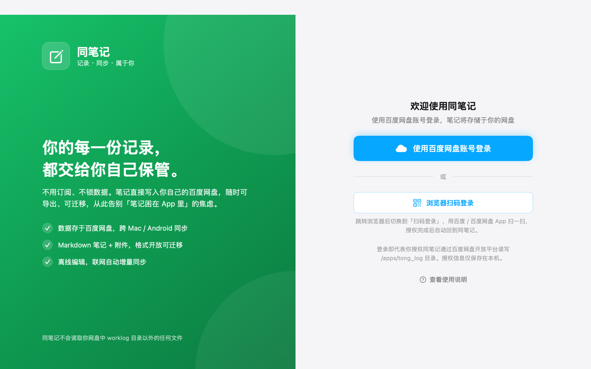
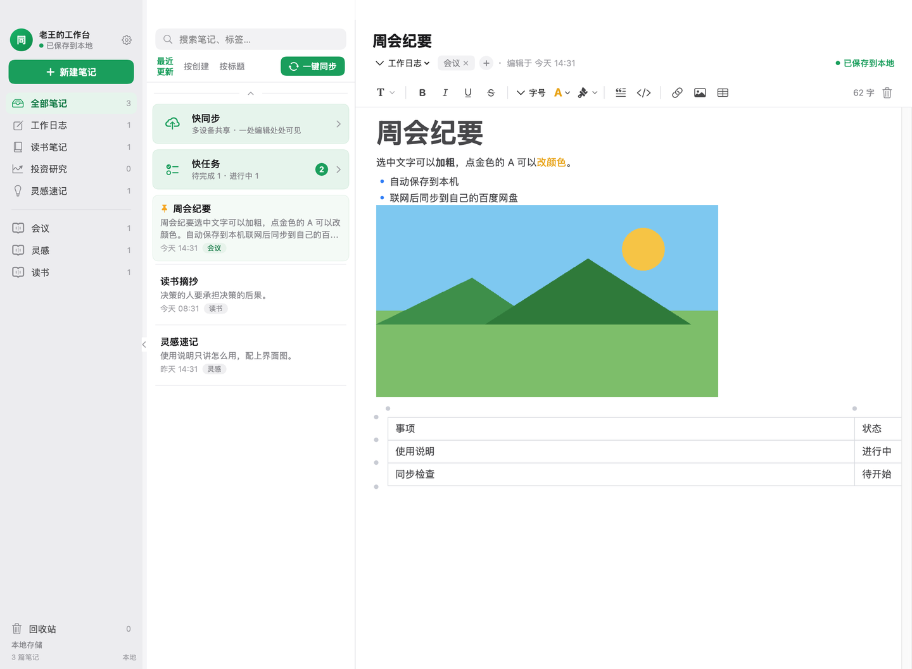
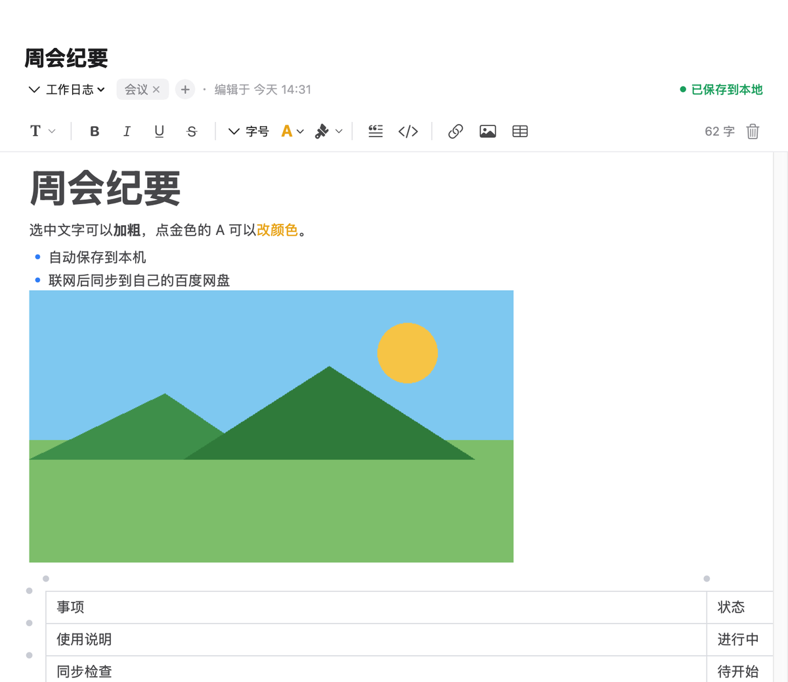
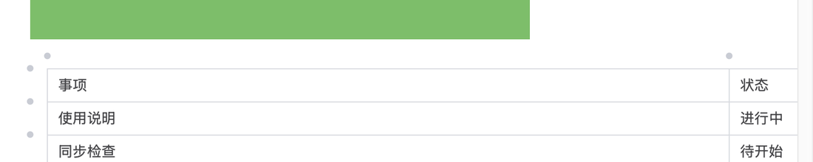
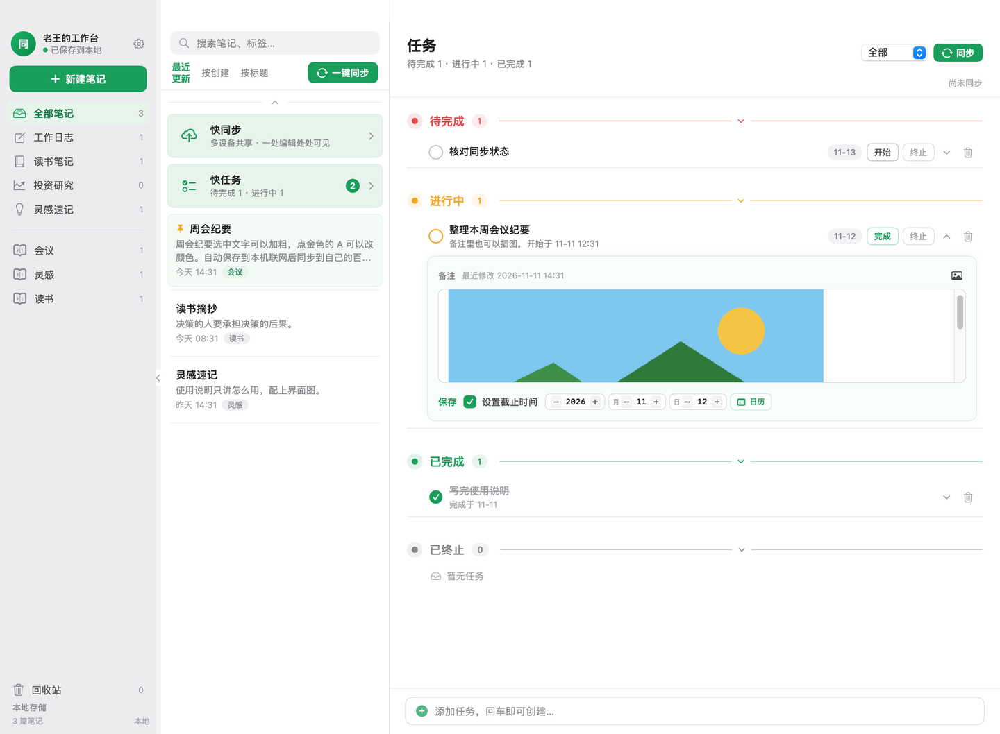
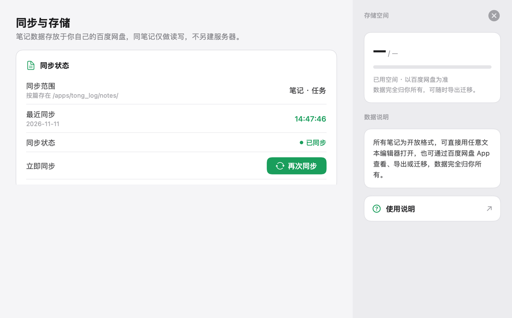

登录
用百度网盘账号登录。两种方式都可以：
- 点蓝色按钮，在弹出的窗口里授权。
- 点「浏览器扫码登录」，用百度 App 或百度网盘 App 扫一扫。

主界面
左边是笔记本和标签，中间是笔记列表，右边是正在写的内容。
- 点绿色「＋ 新建笔记」开始一篇新的。
- 列表上方可以搜索，也可以一键同步。
- 侧栏顶部的齿轮打开同步和存储。

写笔记
标题下面是工具栏。选中文字再点对应按钮。
- T 选择标题或列表。
- B 加粗，旁边是斜体、下划线和删除线。
- 金色的 A 改文字颜色，画笔图标改背景色。
- 照片图标插入图片，也可以直接把截图粘贴进来。
不用点保存。停下之后就写到本机，右上角会显示「已保存到本地」。

表格
点工具栏里的表格图标，在格子上划选行和列，就能插入一张表。
- 光标点进格子后，可以继续输入，也能设置对齐。
- 格子右上角的箭头用来改背景、增加或删除行列。
- 表格外沿的小圆点用来加一行或加一列。

快任务
笔记列表顶部的「快任务」打开任务页。任务按状态分成四组：待完成、进行中、已完成、已终止。
- 展开一条任务，可以写备注、插入图片。
- 可以设置截止时间。过了日期还没完成，会标成逾期。
- 底部输入标题，回车就新建一条。

同步
点侧栏齿轮，打开「同步与存储」。这里能看到最近一次同步，也可以马上再同步全部。
平时不用守着这个页面。打开应用、回到窗口、以及你停止输入大约 1.5 秒之后，都会自动同步一次。

换电脑、同步失败时
- 换一台电脑：用同一个百度网盘账号登录，笔记会同步过来。
- 同步失败：已经写在这台电脑上的内容还在。检查网络后，再点一次同步。